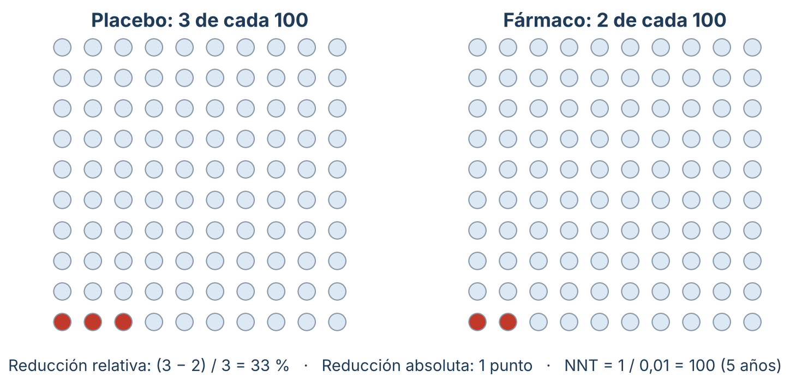
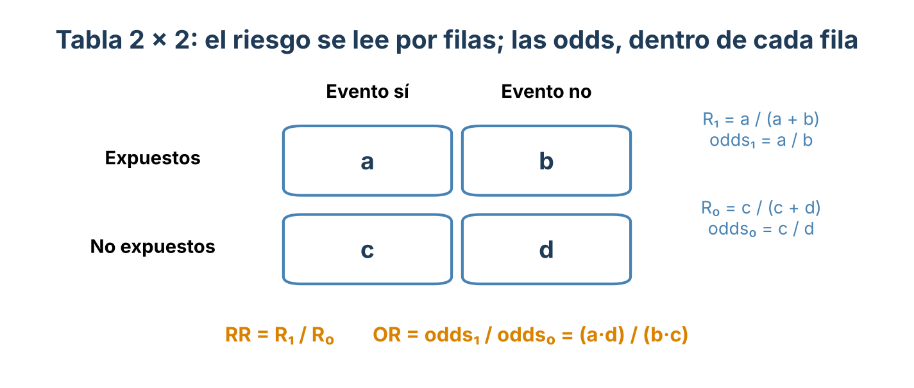
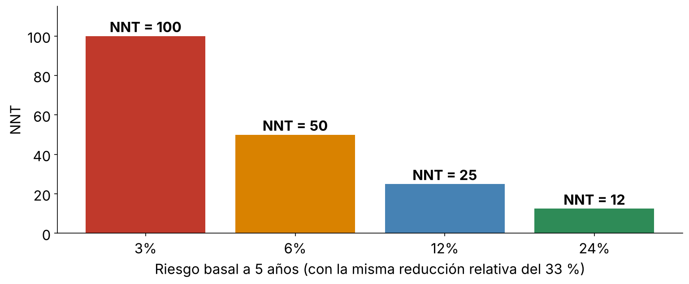
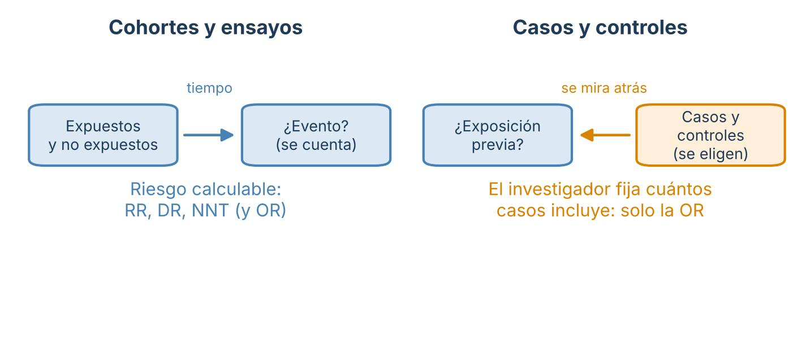
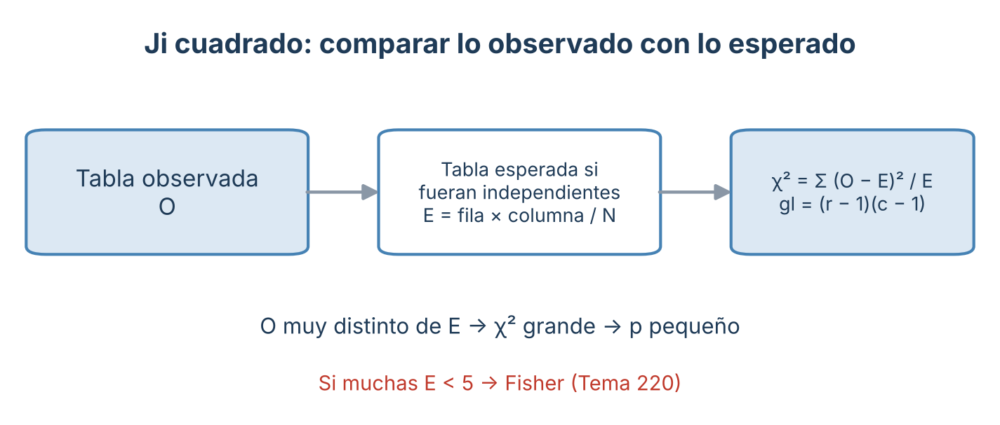

Bioestadística (1964) · Grado en Medicina · Curso 2027-2028
Tema 230Análisis de tablas de contingencia y medidas de asociación epidemiológica: riesgo relativo, odds ratio y número necesario a tratar
Módulo 5. Generalización de conclusiones
Evaluación: el examen del Módulo 5 se hace con Colab. Practica ejecutando e interpretando cada análisis.
Fernando Borrás Rocher · Universidad Miguel Hernández de Elche · CC BY 4.0
Objetivos de aprendizaje
Al terminar esta sesión serás capaz de:
- Aplicar e interpretar la prueba ji cuadrado de independencia en tablas de contingencia.
- Calcular e interpretar el riesgo relativo (RR), la odds ratio (OR) y la diferencia de riesgos, con sus intervalos de confianza.
- Elegir la medida de asociación según el diseño del estudio (cohortes, ensayo clínico o casos y controles).
- Calcular e interpretar el número necesario a tratar (NNT).
- Distinguir la reducción relativa del riesgo de la reducción absoluta, y reconocer cómo se usa cada una para comunicar resultados.
Cómo usar esta presentación
Usa el selector de arriba para dar el tema en una sesión completa o en dos sesiones intercaladas.
🎓 Sesión de clase magistral
- 1. Caso clínico de partida 5 min
- 2. Conceptos clave 10 min
- 5. Autoevaluación 5 min
Explica los conceptos, haz la pausa activa y cierra con las ideas clave.
💻 Sesión de Colab
- 3. Demostración: medidas de asociación con Python 20 min
- 4. Práctica en la app Bioestadística 10 min
- 5. Autoevaluación 5 min
Cada estudiante abre su copia del cuaderno, predice el resultado y después ejecuta la celda.
Teclas: ← → para pasar · N notas del profesor · M cambiar de modo · F pantalla completa · Esc índice.
1. Caso clínico de partida
«Reduce un 33 % el riesgo de infarto»

- Del 3 % al 2 %: la reducción relativa es del 33 %; la absoluta, de 1 punto.
- Hay que tratar a 100 personas durante 5 años para evitar un infarto (NNT = 100).
Pregunta para la clase: ¿Cuál de las dos cifras necesita vuestro paciente para decidir?
2. Conceptos clave
2.1 La tabla 2 × 2

| Evento sí | Evento no | Total | |
|---|---|---|---|
| Expuestos | a | b | a + b |
| No expuestos | c | d | c + d |
- Riesgo en expuestos: $R_1 = a/(a+b)$. Riesgo en no expuestos: $R_0 = c/(c+d)$.
- Odds en expuestos: $a/b$. Odds en no expuestos: $c/d$.
2. Conceptos clave
2.2 Medidas de asociación
La misma reducción relativa, NNT muy distintos

- El efecto relativo suele ser parecido en pacientes de distinto riesgo; el beneficio absoluto, no.
- Por eso las guías tratan según el riesgo absoluto (SCORE2), no solo según el colesterol.
2. Conceptos clave
2.3 Qué medida según el diseño
Cohortes frente a casos y controles

- En cohortes y ensayos se sigue a los pacientes y se cuentan eventos: RR, DR, NNT.
- En casos y controles el investigador fija cuántos casos incluye: solo la OR.
2. Conceptos clave
2.4 La ji cuadrado de independencia

Contrasta $H_0$: «las dos variables cualitativas son independientes». Compara las frecuencias observadas con las esperadas si fueran independientes:
$$\chi^2 = \sum \frac{(O - E)^2}{E}, \qquad E = \frac{\text{total de fila} \times \text{total de columna}}{N}$$
Sirve para tablas de cualquier tamaño (r × c), con (r − 1)(c − 1) grados de libertad. Exige frecuencias esperadas ≥ 5 en la mayoría de las casillas; si no, Fisher (Tema 220).
Pausa activa
Piensa 30 segundos, comenta con quien tienes al lado y vota.
En un ensayo, el evento ocurre en el 10 % con placebo y en el 6 % con tratamiento. ¿Cuál es el NNT?
En la sesión de Colab
Lo que acabas de ver se comprueba con datos en el cuaderno del Tema 230.
- Abre el cuaderno y guarda tu copia: Archivo → Guardar una copia en Drive.
- Ejecuta la celda de configuración.
- Ve a la demostración y predice cada resultado antes de ejecutar.
3. Demostración: medidas de asociación con Python
3.1 Diabetes y eventos cardiovasculares en la cohorte
▶ En tu cuaderno: 3.1 Diabetes y eventos cardiovasculares en la cohorte. Antes de ejecutar, escribe qué esperas obtener.
import numpy as np
import pandas as pd
from scipy import stats
cohorte = pd.read_csv("https://raw.githubusercontent.com/fborrasumh/bioestadistica/main/datos/cohorte_limpia.csv")
tabla = pd.crosstab(cohorte["diabetes"], cohorte["evento_cv_5a"], margins=True)
tabla.columns = ["Sin evento", "Con evento", "Total"]
tabla = tabla.loc[["Sí", "No", "All"]].rename(index={"All": "Total"})
tablaA mano: riesgo en diabéticos = 13/74 = 0,176; en no diabéticos = 35/326 = 0,107.
- RR = 0,176 / 0,107 = 1,64: los diabéticos tienen un riesgo un 64 % mayor.
- DR = 0,176 − 0,107 = 0,068: 6,8 eventos más por cada 100 diabéticos en 5 años.
- OR = (13 × 291) / (61 × 35) = 1,77.
3. Demostración: medidas de asociación con Python
3.2 Las medidas con sus intervalos de confianza
▶ En tu cuaderno: 3.2 Las medidas con sus intervalos de confianza. Antes de ejecutar, escribe qué esperas obtener.
from statsmodels.stats.contingency_tables import Table2x2
# Filas: expuestos (diabetes) y no expuestos; columnas: evento sí y evento no
a, b = 13, 61
c_, d = 35, 291
t = Table2x2(np.array([[a, b], [c_, d]]))
rr, (rr_li, rr_ls) = t.riskratio, t.riskratio_confint()
or_, (or_li, or_ls) = t.oddsratio, t.oddsratio_confint()
r1, r0 = a / (a + b), c_ / (c_ + d)
print(f"Riesgo en diabéticos: {r1:.1%} · en no diabéticos: {r0:.1%}")
print(f"RR = {rr:.2f} (IC 95 %: {rr_li:.2f} a {rr_ls:.2f})")
print(f"OR = {or_:.2f} (IC 95 %: {or_li:.2f} a {or_ls:.2f})")
print(f"DR = {r1 - r0:.1%}")
chi2, p, gl, esperadas = stats.chi2_contingency([[a, b], [c_, d]], correction=False)
print(f"Ji cuadrado = {chi2:.2f}, gl = {gl}, p = {p:.3f}")Interpretación: el riesgo de evento cardiovascular a 5 años fue mayor en los diabéticos (RR estimado 1,64). Pero el IC 95 % incluye el 1 y la ji cuadrado no es significativa. Con 74 diabéticos, la cohorte no tiene potencia para confirmar un aumento de riesgo que la literatura sí ha establecido con estudios mucho mayores. Fíjate en que la OR (1,77) es algo mayor que el RR. El evento afecta al 12 % de la cohorte, y con esa frecuencia la OR ya exagera un poco la asociación.
3. Demostración: medidas de asociación con Python
3.3 Una función propia para cualquier tabla 2 × 2
▶ En tu cuaderno: 3.3 Una función propia para cualquier tabla 2 × 2. Antes de ejecutar, escribe qué esperas obtener.
def medidas_2x2(a, b, c, d, z=1.96):
"""a, b: expuestos con y sin evento; c, d: no expuestos con y sin evento."""
r1, r0 = a / (a + b), c / (c + d)
rr = r1 / r0
ee_log_rr = np.sqrt(1 / a - 1 / (a + b) + 1 / c - 1 / (c + d))
or_ = (a * d) / (b * c)
ee_log_or = np.sqrt(1 / a + 1 / b + 1 / c + 1 / d)
dr = r1 - r0
ee_dr = np.sqrt(r1 * (1 - r1) / (a + b) + r0 * (1 - r0) / (c + d))
return {
"RR": (rr, rr * np.exp(-z * ee_log_rr), rr * np.exp(z * ee_log_rr)),
"OR": (or_, or_ * np.exp(-z * ee_log_or), or_ * np.exp(z * ee_log_or)),
"DR": (dr, dr - z * ee_dr, dr + z * ee_dr),
}
for medida, (valor, li, ls) in medidas_2x2(13, 61, 35, 291).items():
print(f"{medida}: {valor:.3f} (IC 95 %: {li:.3f} a {ls:.3f})")Los IC del RR y de la OR se calculan en escala logarítmica y luego se exponencian: por eso son asimétricos alrededor de la estimación.
3. Demostración: medidas de asociación con Python
3.4 Un ensayo clínico: RRR, RAR y NNT
▶ En tu cuaderno: 3.4 Un ensayo clínico: RRR, RAR y NNT. Antes de ejecutar, escribe qué esperas obtener.
Ensayo hipotético de una estatina en prevención primaria: 2.000 pacientes por grupo, seguidos 5 años.
eventos_trat, n_trat = 160, 2000 # 8 %
eventos_plac, n_plac = 240, 2000 # 12 %
r_t, r_p = eventos_trat / n_trat, eventos_plac / n_plac
rr = r_t / r_p
rar = r_p - r_t
nnt = 1 / rar
ee = np.sqrt(r_t * (1 - r_t) / n_trat + r_p * (1 - r_p) / n_plac)
rar_li, rar_ls = rar - 1.96 * ee, rar + 1.96 * ee
print(f"Riesgo: tratados {r_t:.1%} · placebo {r_p:.1%}")
print(f"RR = {rr:.2f} · Reducción relativa del riesgo = {1 - rr:.0%}")
print(f"Reducción absoluta del riesgo = {rar:.1%} (IC 95 %: {rar_li:.1%} a {rar_ls:.1%})")
print(f"NNT = {nnt:.0f} (IC 95 %: {1 / rar_ls:.0f} a {1 / rar_li:.0f}) durante 5 años")Cómo se comunica a un paciente: «De cada 100 personas como usted que no toman el fármaco, unas 12 tendrán un evento cardiovascular en 5 años. Con el fármaco, unas 8. Hay que tratar a unas 25 personas durante 5 años para evitar un evento».
El IC del NNT se obtiene invirtiendo los límites del IC de la reducción absoluta.
3. Demostración: medidas de asociación con Python
3.5 La misma RRR, NNT muy distintos
▶ En tu cuaderno: 3.5 La misma RRR, NNT muy distintos. Antes de ejecutar, escribe qué esperas obtener.
El efecto relativo de un tratamiento suele ser parecido en pacientes de distinto riesgo basal, pero el beneficio absoluto depende del riesgo de partida.
rrr = 1 / 3
print(f"Reducción relativa del riesgo constante: {rrr:.0%}\n")
print(f"{'Riesgo basal a 5 años':>24} {'Riesgo con tratamiento':>24} {'RAR':>7} {'NNT':>6}")
for basal in [0.03, 0.06, 0.12, 0.24]:
tratado = basal * (1 - rrr)
print(f"{basal:>24.0%} {tratado:>24.1%} {basal - tratado:>7.1%} {1 / (basal - tratado):>6.0f}")El paciente del caso, con un riesgo del 3 %, tiene un NNT de 100; uno de alto riesgo, con un 24 %, de 13. Por eso las guías de prevención cardiovascular recomiendan tratar según el riesgo absoluto estimado (escalas como SCORE2). No basta con el valor del colesterol.
3. Demostración: medidas de asociación con Python
3.6 Tablas mayores: centro de salud y eventos
▶ En tu cuaderno: 3.6 Tablas mayores: centro de salud y eventos. Antes de ejecutar, escribe qué esperas obtener.
tabla_centros = pd.crosstab(cohorte["centro"], cohorte["evento_cv_5a"])
chi2, p, gl, esperadas = stats.chi2_contingency(tabla_centros)
print(tabla_centros, "\n")
print(f"Ji cuadrado = {chi2:.2f}, gl = {gl}, p = {p:.3f}")
print(f"Frecuencia esperada mínima: {esperadas.min():.1f}")
print((tabla_centros[1] / tabla_centros.sum(axis=1)).round(3).rename("Riesgo"))Ampliación
Ampliación: casos y controles, solo la OR
En un estudio de casos y controles se eligen, por ejemplo, 100 pacientes con infarto y 200 sin infarto, y se pregunta si fumaban. El número de casos lo fija el investigador, así que el «riesgo» de la tabla no estima el riesgo real. La OR, en cambio, no depende de esa elección:
# Expuestos (fumadores): 45 casos y 50 controles; no expuestos: 55 casos y 150 controles
for controles_por_caso in [2, 4]:
a, c_ = 45, 55
b, d = 50 * controles_por_caso // 2, 150 * controles_por_caso // 2
m = medidas_2x2(a, b, c_, d)
print(f"{controles_por_caso} controles por caso: «RR» = {m['RR'][0]:.2f} · OR = {m['OR'][0]:.2f}")Al duplicar el número de controles, el falso «RR» cambia; la OR no. En casos y controles, solo la OR tiene sentido.
Ampliación
Ampliación: errores frecuentes
Calcular un RR en un estudio de casos y controles.
Interpretar la OR como un RR cuando el evento es frecuente: la OR exagera la asociación.
Comunicar solo la reducción relativa del riesgo. Da siempre la absoluta y el NNT.
Dar el NNT sin el período de tiempo. Un NNT de 25 a 5 años no es un NNT de 25 a 1 año.
Interpretar una asociación como causal. La cohorte es observacional: la asociación entre diabetes y eventos puede estar confundida, por ejemplo, por la edad (Tema 270).
4. Práctica en la app Bioestadística
Abre la unidad 230 de la app Bioestadística y completa sus misiones:
- Misión básica (sin asistente): calcular a mano el RR, la OR, la RAR y el NNT de tres tablas 2 × 2 de ensayos publicados.
- Misión clínica (con pistas): estimar con IC el RR de evento cardiovascular de los fumadores y de los hipertensos tratados de la cohorte. Interpretarlos.
- Misión reto (con asistente): una nota de prensa da solo la reducción relativa del riesgo. Reescribirla con el asistente para que incluya la absoluta y el NNT. Comprobar los números.
Al terminar, exporta el informe de la unidad.
5. Autoevaluación
Responde sin asistente.
5. Autoevaluación
Elige una opción: verás la explicación.
En un ensayo, el evento ocurre en el 10 % con placebo y en el 6 % con tratamiento. ¿Cuál es el NNT?
En el mismo ensayo (10 % frente a 6 %), ¿cuál es la reducción relativa del riesgo?
En un estudio de casos y controles sobre tabaco y cáncer de vejiga, ¿qué medida de asociación debes usar?
Un estudio da un RR de 1,8 (IC 95 %: 0,9 a 3,6). ¿Qué concluyes?
Un tratamiento con la misma reducción relativa del riesgo se aplica a un paciente de riesgo basal del 2 % y a otro del 20 %. ¿En cuál es menor el NNT?
Ideas clave
- La ji cuadrado contrasta la independencia de dos variables cualitativas.
- RR y DR en cohortes y ensayos; en casos y controles, solo la OR.
- La OR se parece al RR solo si el evento es raro.
- Comunica siempre la reducción absoluta y el NNT, con su período de tiempo, además de la relativa.
- El beneficio absoluto de un tratamiento depende del riesgo basal del paciente.
Glosario
| Término | Definición |
|---|---|
| Tabla de contingencia | Tabla de frecuencias cruzadas de dos variables cualitativas |
| Riesgo | Proporción de individuos que presentan el evento en un período |
| Odds | Cociente entre los que presentan el evento y los que no |
| Riesgo relativo (RR) | Cociente de riesgos entre expuestos y no expuestos |
| Odds ratio (OR) | Cociente de odds entre expuestos y no expuestos |
| Diferencia de riesgos (DR) | Diferencia de riesgos entre expuestos y no expuestos |
| Reducción relativa del riesgo (RRR) | 1 − RR, cuando el tratamiento reduce el riesgo |
| Reducción absoluta del riesgo (RAR) | Diferencia de riesgos entre control y tratamiento |
| Número necesario a tratar (NNT) | Inverso de la RAR: pacientes a tratar para evitar un evento |
| Número necesario para dañar (NND) | Inverso del aumento absoluto del riesgo de un efecto adverso |
Para saber más
- Laupacis A, Sackett DL, Roberts RS. An assessment of clinically useful measures of the consequences of treatment. N Engl J Med. 1988;318(26):1728-1733. doi:10.1056/NEJM198806303182605
- Altman DG. Confidence intervals for the number needed to treat. BMJ. 1998;317(7168):1309-1312. doi:10.1136/bmj.317.7168.1309
- SCORE2 working group and ESC Cardiovascular risk collaboration. SCORE2 risk prediction algorithms: new models to estimate 10-year risk of cardiovascular disease in Europe. Eur Heart J. 2021;42(25):2439-2454. doi:10.1093/eurheartj/ehab309